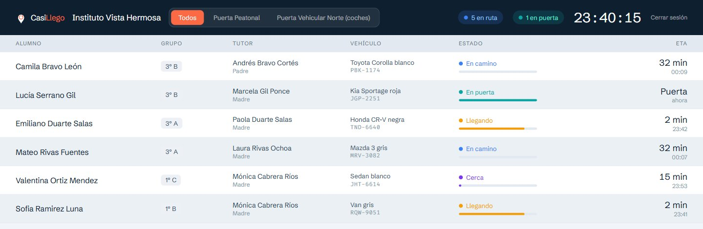
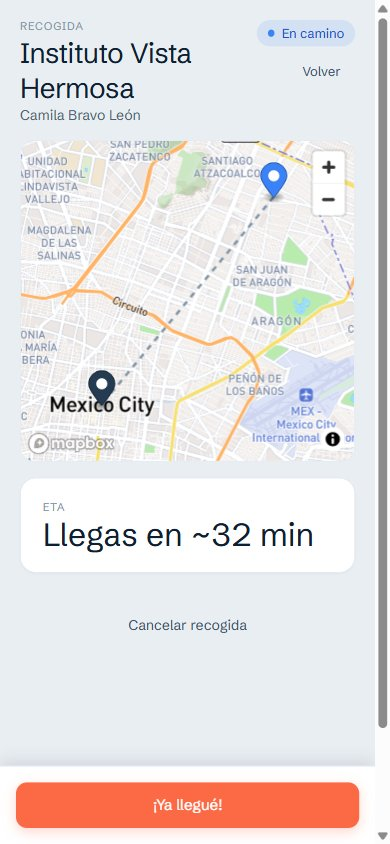

Avisas que vas en camino.
Tu hijo sale a tiempo.
CasiLlego conecta a tutores e instituciones durante la recogida escolar: la escuela ve en tiempo real cuánto tiempo te falta para llegar y prepara al alumno antes de que estaciones.
La salida escolar es un problema de información, no de tráfico
El tutor
No sabes si conviene salir ya o esperar diez minutos más — así que sales antes de tiempo y esperas en la fila, o llegas tarde y tu hijo te espera a ti.
La institución
El personal no sabe quién viene en camino hasta que el coche ya está en la puerta — no hay forma de preparar al alumno con anticipación, ni de organizar la salida por quién llega primero.
Cómo funciona
El tutor avisa
Un botón en la app, al salir hacia la escuela. Nada que llenar, nada que llamar.
La institución sabe cuánto falta
El tablero de la institución muestra quién viene, en qué orden va a llegar y cuánto falta — como las llegadas de un aeropuerto.
Se confirma la entrega
Un código de 4 dígitos en la app del tutor confirma en la puerta que el alumno se entregó a la persona correcta.
Momentos sin estrés
Así se ve de verdad
Sin maquetas ni ilustraciones — esto es el producto real, con datos de una institución de prueba.


Un producto nuevo, pensado para instituciones de Ciudad de México
Si diriges una institución educativa o extracurricular y la salida es un dolor de cabeza diario, hablemos.